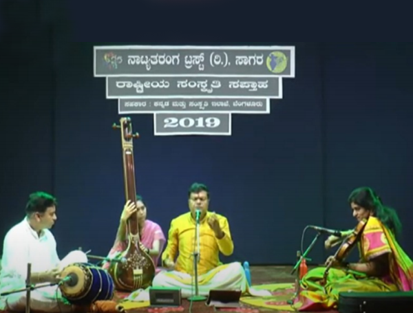
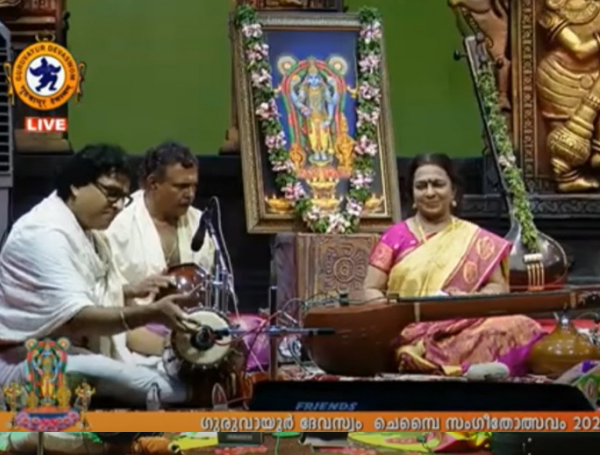
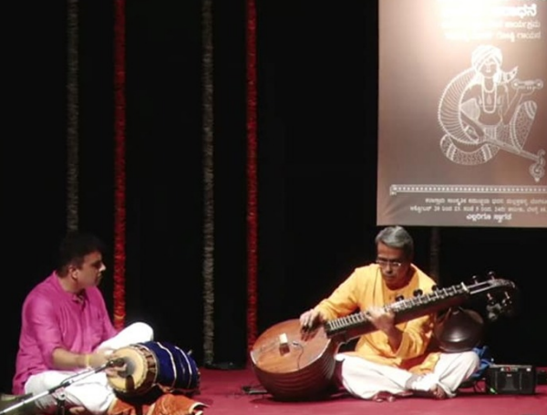
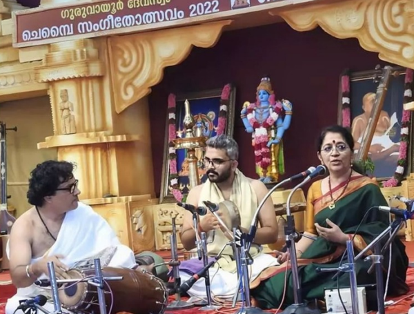
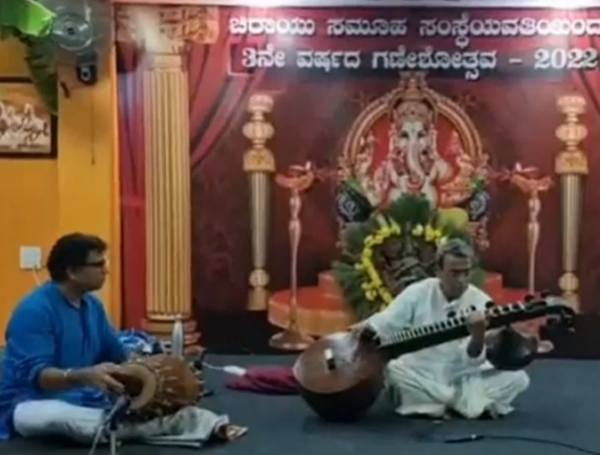
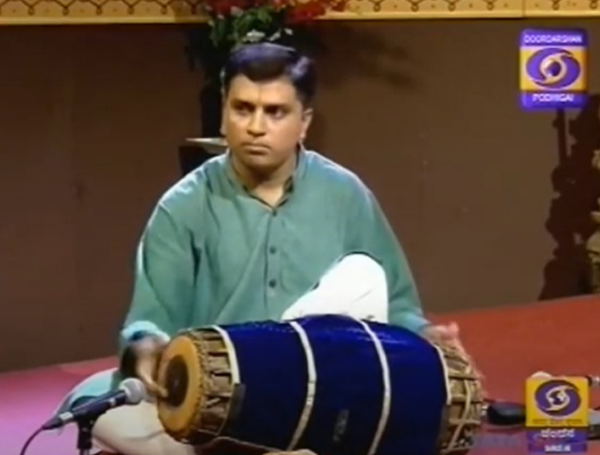
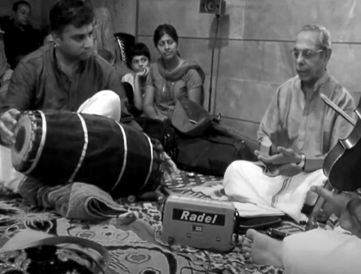
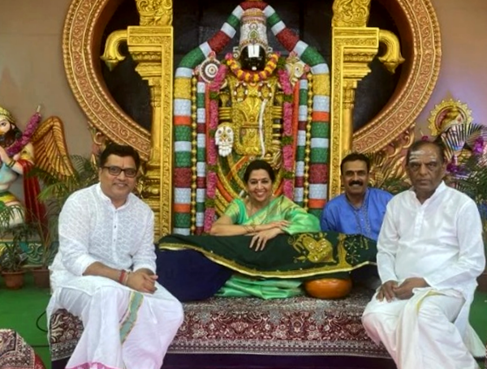

ON STAGE
Beyond Notes. Beyond Time.
An enduring celebration of melody, rhythm and the timeless spirit of Carnatic music.
Explore the collection ↓SELECTED WORK / 08
ON STAGE
Carnatic Concerts
A considered selection of moments, movement and expression.


Sagara · 2019With Vid. T. V. Ramaprasad↗

Chembai Music Festival · 2024With Vid. Emani Lalitha Krishna↗

Bengaluru · 2021With Vid. D. Balakrishna↗

Chembai Music Festival · 2022With Vid. Vijayalakshmi Subramanium↗

Bengaluru · 2022With Vid. D. Balakrishna↗

Doordarshan BroadcastDD Southzone - 2018↗

Bengaluru · 2016With Vid. Rudrapatnam Thyagarajan↗

Nadaneeranjanam · Tirumala · 2024With Vid. Suma Sudhindra↗